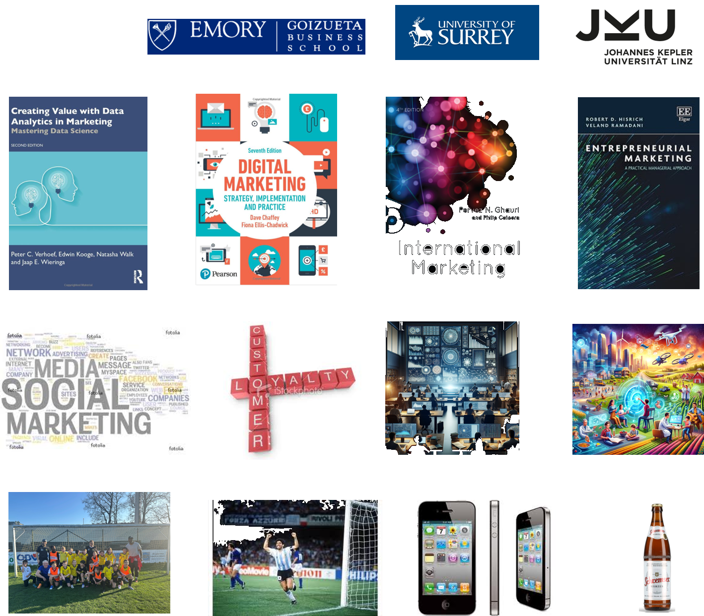

International Business Strategy
in the Age of Deglobalization
International Summer UniversityWU 2026 · Course Outline
Undergraduate · English · 4 ECTS
Course Instructor: Dr. Arne Floh
arne.floh@wu.ac.at

International Summer UniversityWU 2026 · Course Outline
Undergraduate · English · 4 ECTS
Course Instructor: Dr. Arne Floh
arne.floh@wu.ac.at


Please take a moment to introduce yourself to the group:
| Course title | International Business Strategy in the Age of Deglobalization, Nationalism and Geo-political tensions |
| Instructors | Arne Floh (arne.floh@wu.ac.at) · Can Tihanyi (can.tihanyi@wu.ac.at) |
| Institute | Institute for International Business, WU Vienna University of Economics and Business |
The international expansion of their operations is central for the survival of an increasing number of firms. In a context of deglobalization, nationalism, and geo-political tensions, this internationalization poses novel challenges for firms and requires them to rethink their existing strategy.
In this module we analyze
Upon successful completion of this course, you will:
Day 1 — Introduction to IB & culture
Day 2 — International business strategy
Day 3 — Market selection & entry decisions
Days 4–6 — Risk, nationalism & geopolitics
Day 7 — Presentation preparation
Day 8 — Group presentations
Punctuality and attendance are mandatory in all sessions.
This is a highly interactive course. Learning is maximized by balancing lecture with your involvement in discussions, cases, and exercises. Students are expected to be fully engaged and to participate in classroom discussions. All course documents, assignments and lecture notes are posted online.
The course is comprised of
A concise summary of the historical development of the international operations of a company:
Weighting of total grade
| Assignment | Share |
|---|---|
| Pre-course assignment | 25% |
| In-class participation | 30% |
| Team presentation | 45% |
Grading scale
| Range | Grade |
|---|---|
| 100–90% | Excellent (1) |
| 89–80% | Good (2) |
| 79–70% | Satisfactory (3) |
| 69–60% | Sufficient (4) |
| 59–0% | Fail (5) |
Total workload — undergraduate, 4 ECTS
| Pre-course workload | In-class activity | Outside-of-class workload |
|---|---|---|
| approx. 20 hours | 27 hours (= 35 teaching hours) | approx. 33 hours |
Use of artificial intelligence tools
Course materials and cases are provided online. No specific textbook is required — a general International Business textbook provides useful background reading, for example:
Selected journal articles complement the class discussions, including work by Barkema et al. (1996), Dunning, Delios & Henisz (2003), Dhanaraj & Beamish (2004), Hofstede (1980) and Inkpen & Beamish (1997), among others. The full reading list is provided in the course outline.
Department of Global Trade
WU Vienna
Dr. Arne Floh
Senior Lecturer in International Marketing
Deputy Program Director MSc Export- and Internationalisation Management
arne.floh@wu.ac.at
Welthandelsplatz 1, 1020 Wien, Austria
www.wu.ac.at